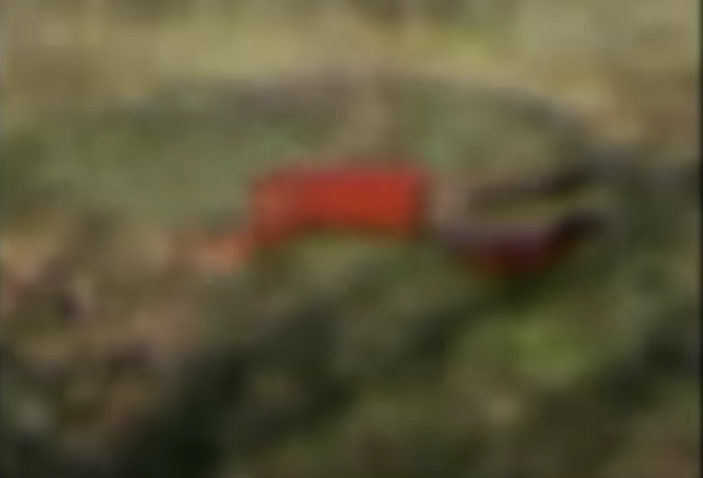

Eu não posso mais ficar nessas casas aleatórias, já sei quase que exatamente onde o vídeo foi gravado, é uma área bem próxima à floresta dos tendões. Eu estou chegando cada vez
mais perto de lá, mas ainda tenho receio das coisas... O demônio branco não tem me seguido tem um tempo, eu não sei oque aconteceu, será que ele ficou com medo da lâmina? mas isso não faz sentido... Enfim,
acredito que eu chegue lá em pouco tempo.
30/04/2023
Cheguei exatamente no mesmo local onde o vídeo foi gravado, tem manchas de sangue pelas paredes, chão e esse lugar fede a carne podre, eu procurei o dia todo mas não achei nem sinal da Charllote. Acho que vou
procurar pela mata quando eu acordar, preciso dormir agora...
01/05/2023
Estava passando pelas matas quando vi um corpo, meu coração deve ter errado umas 2 batidas, minhas pernas tremiam e quando eu me aproximei mais eu percebi que eu não poderia nem saber se aquela era ou não Charllote...
O cadáver tava em um estado avançado de decomposição, não era possível reconhecer o rosto, corpo, nada. Apesar de não querer olhar muito, não pude deixar de notar o abdômen perfurado, completamente oco por dentro.
Eu tirei uma foto, mas percebo agora olhando pra ela que não ficou tão nítida assim, mas talvez seja melhor
assim, não era uma imagem bonita.

Sinceramente... não acho que eu vou conseguir encontrar nada aqui, acho que é melhor eu simplesmente aceitar que talvez esse corpo seja dela, e se não for eu nunca estive nem perto dela. Mas então, como aquela fita foi parar
no prédio? eu pensava que alguém queria que eu a encontrasse... Se não foi isso, alguém queria que eu viesse para cá? Ou me queria aqui... E conseguiu. Já tá na hora de voltar.
03/05/2023
Você já se perguntou o motivo de um lobo se separar de sua matilha? muitas vezes é por causa de fêmeas, buscando alimento ou coisas assim. Normalmente, a matilha continua segura e o lobo agora solitário passa a ser um alvo fácil.
Então por que dessa vez eu sobrevivi?
Quando eu cheguei ao prédio, estava tão claro quanto o momento que eu saí, mas eu estranhei o silêncio, não havia nenhum som vindo de lá de dentro... Meu coração palpitou, eu comecei a suar frio como antes, e quando eu entrei, não tinha nada.
Eu subi todos os andares, e não tinha ninguém, pensei que talvez eles tivessem trocado de lugar? talvez quisessem evitar que o antigo líder deles voltasse maluco e arrumasse confusão, mas isso não faria sentido pelas lâmpadas estarem aqui.
Quando eu saí de novo para olhar de fora, eu percebi que atrás do prédio tinha um cheiro incomum, e quando eu cheguei lá, eu não quis acreditar nos meus olhos, na verdade eu quis tirar eles com minhas próprias mãos pra não ter que enxergar aquilo...
Havia mais de 30 corpos todos empilhados, um sangrando em cima do outro, todas as pessoas que eu tinha compartilhado risadas, tinha sido odiado, tinha gostado, todo mundo tava ali indistinguivelmente aberto, eu não chequei cada um mas tenho certeza
que todos sem fígado... Por que eles e não eu? por que ele me tirou daqui pra fazer isso? eu não quero acreditar que isso é real... Minha alma morreu junto com eles Naquele momento, eu me deitei junto dos corpos e dormi alí esperand nunca mais acordar.
Mas acordei, e tinha que seguir em frente, seguir em frente pelas pessoas que desconfiavam de mim, pelas pessoas que tinham pena de mim, pelas pessoas que gostavam de mim, por todos eles. Eu sabia que ele estava me assistindo dormir ali, mas eu já não
me importava mais com a sua presença, a uma morte dolorosa ainda seria mais serena do que viver dentro da minha mente por um único segundo naquele momento...
Eu sei seu nome, coisa branca
Eu entendi quando vi o vídeo de Charllote, mas eu queria acreditar...
Deus, como eu queria acreditar... Que eu estava errado.
Mas no fundo eu sabia que era ela, é por isso que eu não morri junto de todos, não é?
É por isso
que ela me tirou daqui antes de causar tudo isso...
Você ainda gosta do titio... Não é? Alice?
04/05/2023
Eu não tenho tido vontade de me mover mais... O tempo passa e eu não consigo distinguir oque é real do que não é. Qual o sentido? Por que eu estou vivo... Eu mereço tanto sofrer assim? Queria que essa coisa acabasse logo com isso...
Não tenho coragem, eu sou um covarde... Não conseguiria acabar com tudo eu mesmo, e talvez esse demônio nem me deixaria morrer tranquilamente. Será que eu tô ficando maluco? minha cabeça dói só de tentar pensar em tudo isso...
Eu quero que acabe. É solitário viver nesse prédio sem mais ninguém... Todas essas paredes, todos esses andares, todo esse lugar guarda memórias que eu me recuso a deixar morrer... Eu vou lembrar, vou me lembrar do nome de cada um deles.
06/05/2023
Por que essa coisa não vai embora...? Por que ela tem que ficar me encarando o tempo todo? Esses olhos brilhando com uma intensidade maior que as próprias luzes que deveriam o afugentar... É uma cena terrível, me sinto impotente, sem
controle sobre minha própria vida ou morte, será que se eu morresse ela me deixaria morto? Hoje eu voltei ao local dos corpos, eles estavam todos lá ainda, exatamente na mesma posição. A única diferença era que o sangue já tinha secado e o
fedor era pior... Mas quando você mora do lado dessa pilha de corpos, o cheiro não é algo que te incomoda mais depois de um tempo. Eu queria checar uma coisa, queria saber se eles ainda se lembravam de mim, se eles ainda se importavam. Procurei
nos pertences de todos e não encontrei nada que remetesse a mim... Na verdade, até descobri que tinham eleito uma nova liderança... É engraçado, né? O homem que deixou vocês pra trás e ficou vulnerável foi quem sobreviveu... e vocês todos morreram...
Eu pensei que seus fígados tinham sido retirados, mas não, eles estavam lá ainda. Seus corpos estavam quase intactos... Só alguns, alguns tiveram seus fígados tirados... Qual a motivação dessa coisa pra fazer algo terrível assim?
07/05/2023
Sabe, Alice... Eu sou grato por você ter me deixado viver, é bom estar vivo e poder lembrar dos que já se foram. Eu ainda quero colocar um fim nisso tudo, eu sei que você não faria uma coisa tão horrível
por vontade própria...
É o Dex, não é, pequena? É ele quem tem feito essas coisas... Eu sei.
Você deve ter ficado com medo quando eu atirei em você, será que você vai perdoar o titio? Ele também tava com medo naquela hora... A gente pode ser amigos ainda? Eu não te culpo, Alice.
Enquanto escrevo isso, eu te vejo, sei que você tá aí... dentro dos arbustos, será que você ainda pensa ser uma criancinha pequena? Ó Alice...
Você não está nem um pouco escondida, querida, você é enorme...
Você é aterrorizante, pequena Alice...
Eu quero que isso tudo acabe, você também, não é? Queria que você falasse com o titio...
Uma última vez... queria ouvir sua voz, criança... ...
09/05/2023
Você é uma menina curiosa, Alice... Enquanto eu dormia você deixou partes dos fígados dos meus amigos do meu lado...
Isso devia ser um presente...?
Eu me pergunto o motivo de você ter me deixado vivo até agora...
Você quer que eu entenda algo... Eu sei...
Crescer é assustador, você já deve ter escutado isso, não é? Mas acho que pra você, é pior ainda, você cresceu tanto... É oque você quer? crescer?
Os fígados que você me deu... estavam inteiros ainda, não havia nenhuma lesão...
Eu não entendo...
Não sei oque você quer dizer com isso tudo... ...
10/05/2023
Eu acho que você deve ter momentos de controle ocasionais, não é, Alice? O Dex também controla as vezes, você tem medo das coisas que ele faz, não é? eu me lembro da nossa conversa...
Mas por que você continua me trazendo partes humanas? principalmente fígados, alguns partidos e outros não... Eu prestei mais atenção hoje e percebi que os inteiros são de órgãos normais, e os partidos quase sempre
tem quantidades mínimas de Selenita, mas por que você faz isso? Logo depois de me dar os com mineral, você os toma e devora na minha frente, você quer que eu veja isso né? Isso é nojento, Alice... Esse foi o destino
dela também? Pensei que ela era sua amiga também...
...
12/05/2023
Alice... será que é certo eu chamar você por esse nome... Dex? Eu não consigo distinguir quem é você mais, você raramente vem me ver, eu continuo sozinho nesse prédio iluminadoo, as luzes não fazem nada em você mais, você
não se importa mais com elas... Como eu poderia parar você... Eu preciso?
Hoje eu relembrei sobre o tempo que eu trabalhava na companhia, e eu me lembrei de algo interessante, A... Dex. Os primeiros infectados capturados pela corporação sempre eram estudados, e eu me recordo deles conseguirem mineral mesmo
depois da lua ter sumido, isso deveria ser impossível, não? A não ser que... os infectados também produzam mineral, mas em quantidades pequenas... exatamente como esses fígados que você me traz as vezes. Isso significa que você prefere
comer infectados, você gosta de consumir o minério? Eu pensava que ele fazia mal aos infectados... De qualquer forma, eu não preciso entender os mínimos detalhes.
Eu pensei mais hoje, eu ainda lembro deles toda vez que fecho os olhos, vejo seus rostos e depois me lembro de ver seus corpos empilhados sangrando um sobre o outro, sinto o cheiro daquilo sempre que tento dormir...
E mesmo assim, eu ainda continuo aqui nesse prédio, e você também.
...
Ei, Alice... A companhia tem muito mais minério do que qualquer infectado que você vai encontrar por aí, muito mais do que você conseguiria encontrar sozinha... Você sabe, eu também sei oque isso significa, eu entendo oque eu mesmo estou sugerindo
que aconteça, e eu me odeio por isso... Mas... talvez esse mundo não tenha mais salvação como eu pensava, então se for pra tudo acabar e recomeçar, quero que seja um processo rápido pelo menos. Oque você acha... Dex?
Ahh...
13/05/2023
O tempo passa, ele é imbatível,e eu não me reconheço mais quando me olho no espelho. As vezes eu tento tirar essa máscara de pele que tenho no rosto, tento arrancar esse disfarce, mas parece preso na minha cara, quem colocou isso aqui? Eu preciso
terminar oque eu disse que terminaria, preciso recomeçar as coisas, recomeçar tudo.
Errado... Ta tudo errado nesse lugar, nada parece no lugar certo, tudo tá deslocado, eu to deslocado...
Recentemente, eu tentei retomar as atividades que eu tinha antes das coisas terem acontecido, toda aquela história de insurgência e tal... Mas eu não quero novas pessoas, não quero encontrar novas presas pra colocar no prato dele. Eu preciso fazer Isso
sozinho, eu mereço fazer isso sozinho... Se eu não tivesse saído daqui naquela vez, eles estariam todos vivos ainda. Eu vou o culpado pela morte deles, aquela coisa só fez o seu trabalho...
Eu tenho tentado entrar nas brechas que eu mesmo deixei ao sair da companhia, mas eu não consegui até agora, eles corrigiram algumas coisas. Caso eu consiga, eu vou deixar pistas lá, espero que alguém as encontre em algum momento...
As atividades do Dex com o mineral me fazem recordar de algo que eu vi sobre magnetismo quando eu estava lá dentro, mas não completamente, eu tentei medir o magnetismo do mineral recentemente, mas não parecia algo possível por enquanto...
15/05/2023
É um processo difícil, mas eventualmente eu tenho conseguido acessar as backdoors do site da companhia que eu usava antes do incidente da fita da Charllote. No site deles, havia relatórios que eu não tinha lido ainda, um em específico me chamou atenção:
Um "doutor da praga" que na verdade é um infectado de classe "Apolion", o único catalogado no momento na verdade. Eu tive tempo suficiente para fazer algumas "visitas" aos arredores do prédio da organização, e como eles acham que todos estão mortos, não se preocupam
tanto em checar a idêntidade de cada um que se aproxima, então eu pude chegar perto suficiente do prédio para fazer um teste em específico. Com o mineral dos fígados que Alice me deu de "presente", eu fiz algumas alterações em um gaussímetro que encontrei em uma loja comum,
ele se tornou basicamente um detector de ressonância biológica-magnética pelas propriedades do minério. Com isso, eu testei a intensidade que o minério afeta as áreas próximas ao prédio e é absurdo...
É quase como se aquele local inteiro fosse um imã gigantesco que reage especificamente com a infecção, isso explicaria o motivo de não existirem infectados nas proximidades, e também o motivo de Alice não ter matado todos ali dentro até agora.
Para que ela entre, eu vou precisar diminuir a frequência desse campo de alguma forma, e talvez esse "Doutor da Peste" seja a solução. Ele não é exatamente um infectado comum, já que como eu disse, ele é o único Apolion que existe no momento, e a pura presença dele
dentro desse campo deveria ser impossível, mas se torna possível por que ele parece ter uma biologia própria para isso. Eu fiz testes de intensidade do campo em dois extremos: perto e longe do tal espelho que ele supostamente fica, e quando estou afastado desse espelho, o campo é
cerca de 30x mais fraco, oque significa que esse infectado está "atraindo" o magnetismo para ele mesmo, e talvez com isso eu possa fazer com que Alice tenha um caminho de entrada...
17/05/2023
Ficaria espantado se fosse fácil, claro que não seria... Eles sabem sobre a desproporcionalidade do campo, sabem que o doutor puxa para onde está, e sabem que ele fica estático em um único ponto do prédio, e por isso, o outro polo da empresa tem uma segurança armada muito maior.
Passar por aqueles homens não seria nem um pouco difícil pra o Dex, mas eu não quero arriscar que eles tenham armas municiadas com o minério e acabem ferindo a única arma que eu tenho... Eu preciso mover o doutor e fazer ele entrar pela área do espelho, é o mais seguro e garantido
de dar certo. Eu falei com Maycon hoje... pois é, com o mesmo Maycon que me odiava quando eu trabalhava lá, parece que todo mundo percebe a sujeira que produz eventualmente... Eu vou deixar o nosso registro de conversa aqui, mas fico feliz dele perceber a insustentabilidade da organização.
O áudio ficou meio abafado olhando depois da gravação, mas esse é só um corte da conversa inteira, passamos mais de 2 horas falando sobre variáveis... Consegui concluir os preparativos pelo menos.